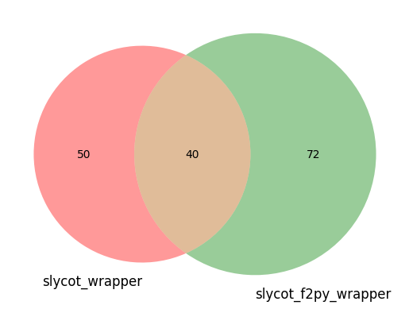

Inspect Slycot
This notebook shows how to inspect the slycot module. The result gives us a first insight which slicot procedures are implemented. In addition we get some insight about the orginisation of the module.
[23]:
import slycot
print(slycot.__version__)
0.5.5.dev0+g294eae0.d20230726
Inspect Wrapper function
[24]:
def get_slycot_method(sly):
all_attributes = dir(sly)
r = re.compile("[a-z][a-z][0-9][0-9a-z][a-z][a-z]")
matched_attributes = list(filter(r.match, all_attributes)) # Read Note below
return matched_attributes
Outer wrapper
[25]:
slycot_wrapper = get_slycot_method(slycot)
print(f"Currently there are {len(slycot_wrapper)} methods implemented.")
print("------")
print(slycot_wrapper)
Currently there are 50 methods implemented.
------
['ab01nd', 'ab04md', 'ab05md', 'ab05nd', 'ab07nd', 'ab08nd', 'ab08nz', 'ab09ad', 'ab09ax', 'ab09bd', 'ab09md', 'ab09nd', 'ab13bd', 'ab13dd', 'ab13ed', 'ab13fd', 'ab13md', 'mb03rd', 'mb03vd', 'mb03vy', 'mb03wd', 'mb05md', 'mb05nd', 'mc01td', 'sb01bd', 'sb02md', 'sb02mt', 'sb02od', 'sb03md', 'sb03md57', 'sb03od', 'sb04md', 'sb04qd', 'sb10ad', 'sb10dd', 'sb10fd', 'sb10hd', 'sg02ad', 'sg03ad', 'sg03bd', 'tb01id', 'tb01pd', 'tb03ad', 'tb04ad', 'tb05ad', 'tc01od', 'tc04ad', 'td04ad', 'tf01md', 'tf01rd']
Inner wrapper
[26]:
slycot_f2py_wrapper = get_slycot_method(slycot._wrapper)
print(f"Currently there are {len(slycot_f2py_wrapper)} methods implemented.")
print("------")
print(slycot_f2py_wrapper)
Currently there are 72 methods implemented.
------
['ab01nd', 'ab04md', 'ab05md', 'ab05nd', 'ab07nd', 'ab08nd', 'ab08nz', 'ab09ad', 'ab09ax', 'ab09bd', 'ab09md', 'ab09nd', 'ab13bd', 'ab13dd', 'ab13ed', 'ab13fd', 'ab13md', 'ag08bd', 'mb03rd', 'mb03vd', 'mb03vy', 'mb03wd', 'mb05md', 'mb05nd', 'mc01td', 'sb01bd', 'sb02md', 'sb02mt_c', 'sb02mt_cl', 'sb02mt_n', 'sb02mt_nl', 'sb02od_b', 'sb02od_c', 'sb02od_d', 'sb02od_n', 'sb03md', 'sb03od', 'sb04md', 'sb04qd', 'sb10ad', 'sb10dd', 'sb10fd', 'sb10hd', 'sb10jd', 'sg02ad_bb', 'sg02ad_bc', 'sg02ad_bd', 'sg02ad_bn', 'sg02ad_g', 'sg03ad', 'sg03bd', 'tb01id', 'tb01pd', 'tb03ad_l', 'tb03ad_r', 'tb04ad_c', 'tb04ad_r', 'tb05ad_ag', 'tb05ad_ng', 'tb05ad_nh', 'tc01od_l', 'tc01od_r', 'tc04ad_l', 'tc04ad_r', 'td04ad_c', 'td04ad_r', 'tf01md', 'tf01rd', 'tg01ad', 'tg01fd_ii', 'tg01fd_nn', 'tg01fd_uu']
Generate Sets for the Venn-Diagramm
[27]:
import matplotlib.pyplot as plt
from matplotlib_venn import venn2
[32]:
difference1 = list(set(slycot_wrapper) - set(slycot_f2py_wrapper))
difference1
print(f"Currently there are {len(difference1)} methods implemented.")
print("------")
print(difference1)
print("\n")
difference2 = list(set(slycot_f2py_wrapper) - set(slycot_wrapper))
difference2
print(f"Currently there are {len(difference2)} methods implemented.")
print("------")
print(difference2)
print("\n")
difference3 = list(set(slycot_f2py_wrapper) ^ set(slycot_wrapper))
difference3
print(f"Currently there are {len(difference3)} methods implemented.")
print("------")
print(difference3)
print("\n")
intersection = list(set(slycot_f2py_wrapper) & set(slycot_wrapper))
intersection
print(f"Currently there are {len(intersection)} methods implemented.")
print("------")
print(intersection)
print("\n")
union = list(set(slycot_f2py_wrapper) | set(slycot_wrapper))
print(f"Currently there are {len(union)} methods implemented.")
print("------")
print(union)
print("\n")
Currently there are 10 methods implemented.
------
['tb05ad', 'sb02od', 'tb04ad', 'tc01od', 'td04ad', 'sg02ad', 'tc04ad', 'sb02mt', 'tb03ad', 'sb03md57']
Currently there are 32 methods implemented.
------
['td04ad_c', 'tc04ad_r', 'tb04ad_c', 'sg02ad_bn', 'sb02od_b', 'tc01od_r', 'sb02mt_nl', 'tb05ad_nh', 'sg02ad_g', 'sb02od_c', 'tb04ad_r', 'td04ad_r', 'tc04ad_l', 'tc01od_l', 'tg01fd_uu', 'tg01ad', 'sb02od_n', 'sb02od_d', 'ag08bd', 'sb02mt_c', 'sb02mt_cl', 'sb02mt_n', 'tb05ad_ag', 'sg02ad_bb', 'sg02ad_bd', 'tb05ad_ng', 'sg02ad_bc', 'tb03ad_r', 'sb10jd', 'tg01fd_ii', 'tg01fd_nn', 'tb03ad_l']
Currently there are 42 methods implemented.
------
['td04ad_c', 'tc04ad_r', 'tb04ad_c', 'sg02ad_bn', 'tc01od_r', 'sb02mt', 'td04ad', 'sb02od_b', 'sb02mt_nl', 'sb03md57', 'tb05ad_nh', 'sg02ad_g', 'tb04ad', 'sb02od_c', 'tb04ad_r', 'td04ad_r', 'tc04ad_l', 'tc01od_l', 'tg01fd_uu', 'tb05ad', 'tg01ad', 'tc01od', 'sg02ad', 'sb02od_n', 'sb02od_d', 'ag08bd', 'sb02mt_c', 'sb02mt_cl', 'sb02mt_n', 'tb05ad_ag', 'sg02ad_bb', 'sb02od', 'sg02ad_bd', 'tb05ad_ng', 'tc04ad', 'tb03ad', 'sg02ad_bc', 'tb03ad_r', 'sb10jd', 'tg01fd_ii', 'tg01fd_nn', 'tb03ad_l']
Currently there are 40 methods implemented.
------
['ab09md', 'tf01rd', 'ab09nd', 'ab13dd', 'ab13md', 'mb03rd', 'sb03md', 'sb01bd', 'sb10dd', 'ab08nz', 'tb01pd', 'mb03wd', 'ab05md', 'sg03bd', 'ab04md', 'ab09ax', 'ab13bd', 'sb10ad', 'tb01id', 'ab13ed', 'sg03ad', 'ab07nd', 'sb10fd', 'sb04qd', 'ab01nd', 'mb03vd', 'mc01td', 'sb10hd', 'ab09bd', 'tf01md', 'ab05nd', 'ab08nd', 'mb03vy', 'sb02md', 'sb04md', 'ab09ad', 'mb05md', 'ab13fd', 'sb03od', 'mb05nd']
Currently there are 82 methods implemented.
------
['td04ad_c', 'ab09md', 'ab09nd', 'ab13dd', 'ab13md', 'mb03rd', 'td04ad', 'sb02od_b', 'ab08nz', 'tb01pd', 'sb02mt', 'sb02mt_nl', 'sb03md57', 'tb05ad_nh', 'sg03bd', 'sb10ad', 'tb04ad_r', 'td04ad_r', 'tc04ad_l', 'sg03ad', 'ab07nd', 'sb10fd', 'sb02od_n', 'sb04qd', 'sg02ad', 'ab01nd', 'sb02mt_cl', 'mb03vd', 'tb05ad_ag', 'sg02ad_bb', 'ab09bd', 'tf01md', 'sb02od', 'ab05nd', 'tc04ad', 'ab08nd', 'tb03ad', 'mb03vy', 'sb04md', 'tb03ad_r', 'tg01fd_ii', 'tg01fd_nn', 'tb03ad_l', 'tc04ad_r', 'tf01rd', 'sb03md', 'tb04ad_c', 'sb10dd', 'sb01bd', 'sg02ad_bn', 'tc01od_r', 'mb03wd', 'ab05md', 'sg02ad_g', 'ab04md', 'tb04ad', 'ab09ax', 'ab13bd', 'sb02od_c', 'tb01id', 'ab13ed', 'tc01od_l', 'tg01fd_uu', 'tg01ad', 'tb05ad', 'tc01od', 'sb02od_d', 'ag08bd', 'sb02mt_c', 'sb02mt_n', 'mc01td', 'sb10hd', 'sg02ad_bd', 'tb05ad_ng', 'sb02md', 'sg02ad_bc', 'sb10jd', 'ab09ad', 'mb05md', 'ab13fd', 'sb03od', 'mb05nd']
[33]:
venn2(subsets = (len(set(slycot_wrapper)),
len(set(slycot_f2py_wrapper)),
len(intersection)), set_labels = ('slycot_wrapper', 'slycot_f2py_wrapper'))
plt.show()
